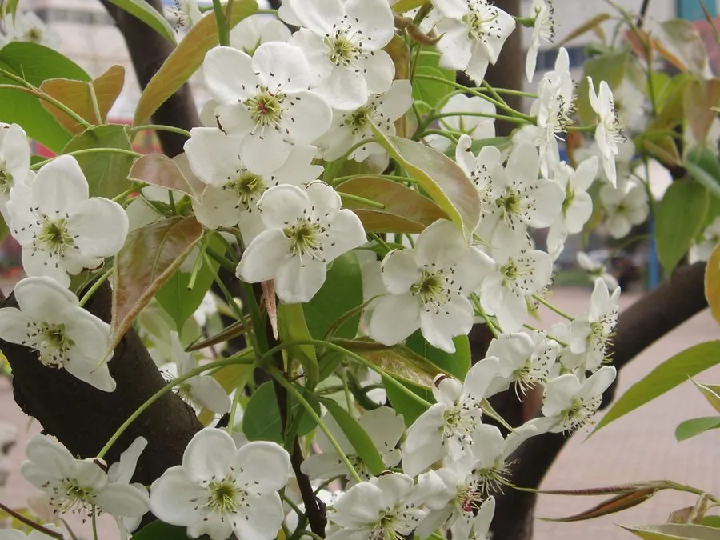

农作物与经济植物 · 植物界
梨 Pyrus bretschneideri

梨是蔷薇科落叶果树，果实脆嫩多汁、清甜爽口，可鲜食或熬制秋梨膏，中国是梨的主要原产地和栽培中心之一。
- 分类
- 门被子植物门纲双子叶植物纲目蔷薇目科蔷薇科属梨属
- 栖息环境
- 温带平原与丘陵，喜光耐寒，适宜深厚疏松土壤
- 地理分布
- 原产中国与欧亚大陆，中国华北、东北及西北广泛栽培
- 保护级别
- 暂无评估（栽培作物）
物种志
梨是蔷薇科落叶乔木，株高可达 5–8 m，树皮灰褐色，小枝光滑，寿命较长，盛果期可达数十年。叶片卵形或椭圆形，边缘有细锯齿，秋季变为红黄色。伞房花序，花白色，先于叶或与叶同时开放。果实为梨果，近球形或倒卵形，果皮黄白或黄褐色，果肉白色，脆嫩多汁，果心内有数粒黑色种子。
梨原产中国、欧洲和西亚，栽培历史至少三千年。中国是白梨、沙梨和秋子梨等重要种类的原产地，河北、山东、辽宁等地为主要产区，鸭梨、雪花梨、酥梨等品种各具风味。梨树喜光、耐寒，对土壤要求不严，但以深厚疏松的沙壤土为佳。花期需防霜冻，果实成熟后要适时采收。除鲜食外，梨还可加工罐头、梨膏、果酒；木材细致，可用于雕刻。
形态与习性
- 株高5–8 m，落叶乔木
- 花白色伞房花序
- 果实梨果，脆嫩多汁
- 主要产区河北、山东、辽宁等地
- 采收秋季成熟后适时采收
- 用途鲜食、梨膏与罐头
趣味知识
- 梨树开花较早，花期遇霜冻容易减产。
- 中国是梨的重要原产地，白梨、沙梨等种类资源丰富。
- 梨膏常以梨汁配蜂蜜或药材熬制而成。